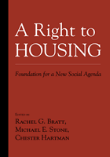

An examination of America's housing crisis by the leading progressive housing activists in the country
An examination of America's housing crisis by the leading progressive housing activists in the country


 An examination of America's housing crisis by the leading progressive housing activists in the country
An examination of America's housing crisis by the leading progressive housing activists in the country

|  |
A Right to HousingFoundation for a New Social Agendaedited by Rachel G. Bratt, Michael E. Stone and Chester Hartmanpaper EAN: 978-1-59213-432-8 (ISBN: 1-59213-432-7) |
"Rachel Bratt, Michael Stone and Chester Hartman have organized a cogent argument for a right to housing undergirded by the integrity of persuasive research. They have put forward a housing agenda that relies on sound facts and indisputable logic—never forgetting their passion for social justice."
—Nicolas P. Retsinas, Director, Joint Center for Housing Studies, Harvard University
In the 1949 Housing Act, Congress declared "a decent home and a suitable living environment for every American family" to be our national housing goal. Today, little more than half a century later, upwards of 100 million people in the United States live in housing that is physically inadequate, unsafe, overcrowded, or unaffordable.
The contributors to A Right to Housing consider the key issues related to America's housing crisis, including income inequality and insecurity, segregation and discrimination, the rights of the elderly, as well as legislative and judicial responses to homelessness. The book offers a detailed examination of how access to adequate housing is directly related to economic security.
With essays by leading activists and scholars, this book presents a powerful and compelling analysis of the persistent inability of the U.S. to meet many of its citizens' housing needs and a comprehensive proposal for progressive change.
Excerpt available at www.temple.edu/tempress
"Bratt, Stone and Hartman have assembled an impressive volume of persuasive arguments and ideas for how to make U.S. housing policy more equitable, efficient and effective, and to set U.S. policy in the direction of a right to housing. A Right to Housing makes a valuable contribution to the literature of American social policy and to the progressive housing movement."
—Sheila Crowley, President, National Low Income Housing Coalition
"A landmark in progressive housing thought, this book is also a worthy American contribution to the global debate about social and economic rights and the adequacy of market-driven public policy. A must-read for all who care about economic inequality and the ongoing but largely overlooked housing crisis facing low-income people."
—Xavier de Souza Briggs, Massachusetts Institute of Technology, and editor of The Geography of Opportunity
"A Right to Housing presents a compelling case for renewing this nation's commitment to ensuring decent, affordable housing for every American. This book includes thought-provoking and in-depth suggestions for achieving both real and lasting change."
—Conrad Egan, President and CEO of the National Housing Conference, and former Executive Director of the bipartisan Congressionally-appointed Millennial Housing Commission
"In an era when homelessness is reaching record levels and racial and class segregation continue unabated, A Right to Housing is a welcome addition to the literature. Housing remains a key nexus in the tangle of urban poverty and an inevitable part of the solution."
—Douglas S. Massey, Henry G. Bryant Professor of Sociology and Public Affairs at Princeton University
"[C]hapters offer a steady indictment of the failures of both market capitalism and government housing policy in America...This book should be required reading for anyone contemplating building personal equity by becoming a capitalist landlord. A useful addition to housing and public policy collections. Recommended."
—Choice
"A well-written hard-nosed analysis of a range of dimensions of housing in the U.S. Particularly if you have never delved into the housing field before...this book is where you should begin."
—Contemporary Sociology
"This is an audacious book....written and edited by some of the nation’s most distinguished housing policy experts, [it] calls for a radical redirection of housing policy in the United States."
—The Journal of Planning Education and Research
"This book is a good overview for academics, practitioners, and students interested in issues pertaining to housing and community development. The book alternates between quantitative analyses, policy analyses, and advocacy, laying the groundwork for the Right to Housing that, for many years, has not been considered seriously enough....This book is a timely contribution to future policy debate."
—The Journal of Planning Literature
"It is then both timely and useful to have a group of insightful, seasoned analysts remind us of the details of our collective failures and our potential policy options. At its strongest, their book is a sensible and critical overview of core U.S. housing needs, problems, and options that can be effectively used in graduate housing, policy and planning courses. Moreover, the collective effect of this book is to vivify the long-term need for decent housing as an unavoidable political right and not a policy anomaly."
—Journal of Regional Science
"[A]ll of the papers are informative and interesting….[T]he many strengths of the book are its clarity and its comprehensiveness, so that one gets a real feel for housing in the US housing policy."
—The Journal of Housing and the Built Environment
"This book does an excellent job of taking into account this broader notion of housing, while remaining focused on those in poverty or with disabilities who are in dire need of affordable, safe housing. Particularly commendable is the overview of the various functions of housing....[T]he volume is ideal reading for any advocate, researcher, or student interested in the notion of a right to housing, safe housing, or affordable housing. It is a treasure trove of statistics, policy history, and policy proposals for a more progressive housing model in America. This book is highly recommended!"
—Journal of Sociology and Social Welfare
Also available in e-book
Acknowledgments
Editors' Introduction: Why a Right to Housing Is Needed and Makes Sense
1. The Economic Environment of Housing: Income Inequality and Insecurity – Chris Tilly
2. Housing Affordability: One-Third of a Nation Shelter-Poor – Michael E. Stone
3. Segregation and Discrimination in Housing – Nancy A. Denton
4. Pernicious Problems of Housing Finance – Michael E. Stone
5. Federal Housing Subsidies: Who Benefits and Why? – Peter Dreier
6. The Permanent Housing Crisis: The Failures of Conservatism and the Limitations of Liberalism – Peter Marcuse and W. Dennis Keating
7. Federally-Assisted Housing in Conflict: Privatization or Preservation? – Emily Paradise Achtenberg
BOX: Privatizing Rural Rental Housing – Robert Wiener
8. The Case for a Right to Housing – Chester Hartman
9. The Role of the Courts and a Right to Housing – David B. Bryson
10. Housing Organizing for the Long Haul: Building on Experience – Larry Lamar Yates
11. Social Ownership – Michael E. Stone
12. Social Financing – Michael Swack
13. The Elderly and a Right to Housing – Jon Pynoos and Christy M. Nishita
14. Opening Doors: What a Right to Housing Means for Women – Susan Saegert and Heléne Clark
15. Responses to Homelessness: Past Policies, Future Directions, and a Right to Housing – Rob Rosenthal and Maria Foscarinis
16. Community Development Corporations: Challenges in Supporting a Right to Housing – Rachel G. Bratt
BOX Old and New Challenges Facing Rural Housing Nonprofits – Robert Wiener
17. Between Devolution and the Deep Blue Sea: What's a City or State to Do? – John Emmeus Davis
18. Housing and Economic Security – Rachel G. Bratt
About the Contributors
Index
Rachel G. Bratt is Professor and Chair of the Department of Urban and Environmental Policy and Planning at Tufts University. She is the author of Rebuilding a Low-Income Housing Policy and a co-editor of Critical Perspectives on Housing, both published by Temple.
Michael E. Stone (1943-2015) was Professor of Community Planning and Public Policy at the University of Massachusetts Boston. His publications include Shelter Poverty: New Ideas on Housing Affordability (Temple).
Chester Hartman is Director of Research at the Poverty & Race Research Action Council in Washington, DC and Adjunct Professor of Sociology at George Washington University. His most recent books are City for Sale: The Transformation of San Francisco, Between Eminence & Notoriety: Four Decades of Radical Urban Planning, and Poverty & Race in America: The Emerging Agendas.
Contributors: Emily Paradise Achtenberg, Boston, Consultant; David B. Bryson, National Housing Law Project; John Emmeus Davis, Burlington, Vermont, Consultant; Nancy A. Denton, SUNY Albany; Peter Dreier, Occidental College; Maria Foscarinis, National Law Center for Homelessness and Poverty; Dennis Keating, Cleveland State University; Peter Marcuse, Columbia University; Jon Pynoos and Christy M. Nishita, University of Southern California; Rob Rosenthal, Wesleyan University; Susan Saegert and Helene Clark, City University of New York; Michael Swack, Southern New Hampshire University; Chris Tilly, University of Massachusetts, Lowell; Robert Wiener, California Coalition for Rural Housing Project; Larry Lamar Yates, Social Justice Connections; and the editors.
Urban Studies
Political Science and Public Policy
Sociology
© 2015 Temple University. All Rights Reserved. This page: http://www.temple.edu/tempress/titles/1301_reg.html.